Operational Amplifiers in Instrumentation
Instruments 2.2
Imron Rosyadi
4. Operational Amplifiers in Instrumentation
- Modern signal‑conditioning almost always uses op amps rather than discrete transistors.
- Advantages for instrumentation:
- Small, low‑power IC packages
- High reliability and repeatability
- Flexible building block: amplification, filtering, conversion, math operations
In this session we will:
- Introduce op amp behavior (ideal vs non‑ideal).
- Derive and use basic configurations (inverting, noninverting, follower).
- Build up to instrumentation amplifiers and current/voltage converters.
- See how these circuits support real measurement systems (bridges, sensors, 4–20 mA loops).
Learning Objectives
By the end of this session, you should be able to:
- Describe the ideal op amp model and the two “golden rules.”
- Analyze inverting and noninverting amplifiers and design their resistor values for a desired gain.
- Explain non‑ideal op amp parameters (offsets, slew rate, finite gain) and when they matter.
- Use op amp building blocks to implement:
- Voltage follower
- Summing amplifier
- Differential and instrumentation amplifiers
- Voltage–current and current–voltage converters
- Integrators and differentiators
- Apply a structured design process to build signal‑conditioning circuits for sensors and bridges.
Big Picture: Where Do Op Amps Fit?
Measurement Chain
- Physical variable: temperature, pressure, flow, strain, etc.
- Sensor: converts variable → electrical quantity (R, V, I).
- Signal conditioning:
- Amplify / attenuate
- Shift offset
- Filter noise
- Convert V ↔︎ I
- Linearize non‑linear sensors
- ADC / controller / display
Op amps live in step 3 as the main “glue” between the sensor and digital world.
Note
In instrumentation, “signal conditioning” usually means one or more op amp stages plus passive components and references.
Op Amp Symbol & I/O Concept
Symbol (functional view)
- Two inputs:
+noninverting−inverting
- One output: voltage \(V_{\text{out}}\)
- Power pins \((+V_s,\,-V_s)\) are usually omitted when drawing signal‑level schematics.
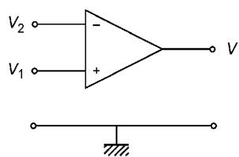
- We view the op amp as a 3‑terminal device (two inputs + one output) for analysis.
- Internally, it’s made from transistors, resistors, capacitors, etc., but we abstract all that away.
Differential Input & Transfer Curve
- Define the differential input voltage: \[v_d = V_2 - V_1\]
- The op amp’s open‑loop behavior: \[V_{\text{out}} \approx A v_d\] where \(A\) is the open‑loop gain (very large, \(\sim 10^5\)).
- But \(V_{\text{out}}\) cannot exceed saturation: \(\pm V_{\text{sat}}\) (a bit less than the supply rails).
- Linear region is extremely narrow: \(\Delta V \lesssim 1\ \text{mV}\) while \(V_{\text{sat}}\sim 10\ \text{V}\).
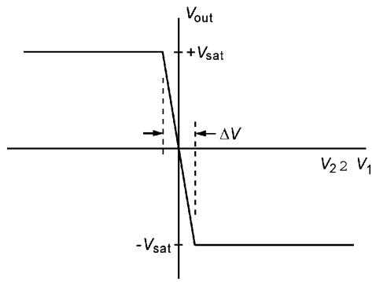
- Effective open‑loop gain: \[A \approx \left|\frac{2V_{\text{sat}}}{\Delta V}\right| \sim 200{,}000\ \text{V/V}\]
Why “Inverting” and “Noninverting”?
- Connect \(V_1\) to the noninverting (
+) input, \(V_2\) to inverting (−). - If \(V_2\) is more positive than \(V_1\) \(\Rightarrow v_d = V_2 - V_1 > 0\):
- Output saturates at negative voltage \(-V_{\text{sat}}\).
- More positive at
−⇒ output goes negative ⇒ “inverting.”
- If \(V_1\) is more positive than \(V_2\) \(\Rightarrow v_d < 0\):
- Output saturates at positive voltage \(+V_{\text{sat}}\).
- More positive at
+⇒ output goes positive ⇒ “noninverting.”
Important
The labels + and − refer to how a positive input change affects the output sign, not to power supply polarity.
Ideal Op Amp Assumptions
In most feedback circuits, we use the ideal op amp model:
- Infinite open‑loop gain: \(A \to \infty\)
- Infinite input impedance: no current into
+or−terminals - Zero output impedance: output behaves as an ideal voltage source
- With negative feedback and not saturated:
- Rule 1: \(I_{+} = I_{-} = 0\)
- Rule 2: \(V_{+} = V_{-}\)
These two “golden rules” are enough to analyze almost every op amp circuit you’ll meet in this course.
Ideal Inverting Amplifier Circuit
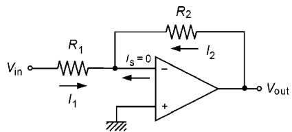
- Input \(V_{\text{in}}\) goes through \(R_1\) to the summing node.
- Feedback resistor \(R_2\) from output back to inverting input.
- Noninverting input grounded: \(V_{+} = 0\).
Using ideal rules:
- \(V_{-} = V_{+} = 0\) ⇒ summing node at “virtual ground.”
- No input current ⇒ sum of currents at node is zero: \[ I_1 + I_2 = 0 \] \[ \frac{V_{\text{in}} - 0}{R_1} + \frac{V_{\text{out}} - 0}{R_2} = 0 \] \[ V_{\text{out}} = -\frac{R_2}{R_1}V_{\text{in}} \]
- Gain magnitude is \(|R_2 / R_1|\); sign is negative ⇒ 180° phase inversion.
Inverting Amplifier: Input Impedance & Attenuation
- Input impedance \(Z_{\text{in}}\) “seen” by \(V_{\text{in}}\):
- \(V_{\text{in}}\) sees \(R_1\) directly.
- Summing node is at virtual ground.
- So \(Z_{\text{in}} \approx R_1\).
- If \(R_2 < R_1\) ⇒ \(|V_{\text{out}}| < |V_{\text{in}}|\): attenuator.
- If \(R_2 > R_1\) ⇒ gain \(> 1\): amplifier.
Tip
You can control both gain and input impedance simply by picking \(R_1\) and \(R_2\).
Non‑Ideal Effects: When Does “Ideal” Break?
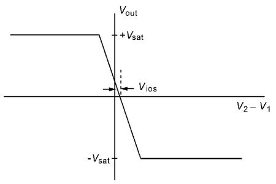
Non‑ideal parameters:
- Finite open‑loop gain \(A\) (e.g. \(A \sim 2\times10^5\)).
- Finite input impedance \(z_{\text{in}}\) (e.g. MΩ).
- Non‑zero output impedance \(z_0\) (few Ω).
If we include these, the inverting amplifier gain becomes:
\[ V_0 = -\frac{R_2}{R_1}\left(\frac{1}{1 - \mu}\right)V_{\text{in}} \]
with
\[ \mu = \frac{\left(1 + \frac{z_0}{R_2}\right)\left(1 + \frac{R_2}{R_1} + \frac{R_2}{z_{\text{in}}}\right)}{A + \frac{z_0}{R_2}} \]
For typical values (\(A=200{,}000\), \(z_0=75\Omega\), \(z_{\text{in}}=2\text{M}\Omega\), \(R_2/R_1=100\)), we get \(\mu \approx 0.0005\), so the error in gain is about \(0.05\%\).
Note
Conclusion: for low‑frequency instrumentation work and reasonable resistor values, ideal op amp analysis is usually accurate enough.
Op Amp Data Sheet Specifications
Beyond \(A\), \(z_{\text{in}}\), \(z_0\), several key specs matter in practice:
- Input offset voltage \(V_{\text{ios}}\)
- Small input differential required to force \(V_{\text{out}}=0\).
- Results in small DC error at output even when input is zero.
- Input bias currents \(I_{B+}, I_{B-}\)
- Average current needed into each input to bias internal transistors.
- Input offset current
- Difference between the two input bias currents.
- Slew rate (SR)
- Maximum rate of change of output voltage (V/μs) for large‑signal steps.
- Limits how fast output can move ⇒ important for fast signals.
- Unity‑gain bandwidth (gain–bandwidth product)
- Frequency where open‑loop gain falls to 1.
- For closed‑loop gain \(G\), approximate bandwidth \(\approx \frac{f_T}{G}\).
These can all show up as accuracy, drift, or speed limitations in instrumentation circuits.
Practical Power & Offset Compensation
- Op amp powered by bipolar supplies: typically \(\pm 9\) to \(\pm 15\ \text{V}\) in classical designs.
- Many packages offer pins for offset‑null:
- Use a small trimmer pot between these pins and a supply.
- Adjust until output is 0 V when input is 0 V ⇒ cancel \(V_{\text{ios}}\).
Offset current compensation trick:
- Make the resistance seen by
+input equal to the Thevenin resistance seen by−input. - That way, both bias currents produce similar drops → smaller output error.
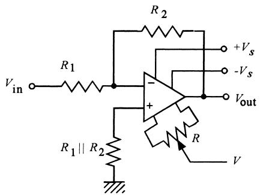
Design Rule of Thumb: “Think mA and kΩ”
- Most general‑purpose op amps can source/sink only tens of mA.
- Avoid tiny resistors that force huge currents.
Example (text Example 17):
- Want gain \(-4.5\).
- Mathematically, you could pick \(R_1=1\Omega\), \(R_2=4.5\Omega\).
- If \(V_{\text{in}}=2\ \text{V}\) ⇒ \(V_{\text{out}}=-9\ \text{V}\).
- Feedback current \(I_2 = (-9\text{V})/4.5\Omega = -2\ \text{A}\) ⇒ impossible.
Practical choice:
- \(R_1 = 1\text{k}\Omega\), \(R_2 = 4.5\text{k}\Omega\).
- For the same \(V_{\text{out}}\), feedback current is \(2\ \text{mA}\), well within limits.
Important
Default to kΩ range for resistors and mA (or less) for currents when designing op amp circuits.
Voltage Follower (Buffer)
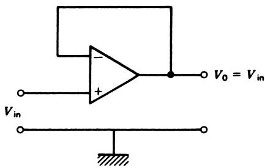
- Output tied directly to inverting input.
- Input applied to noninverting input.
Using rules: \(V_{+} = V_{-} = V_{\text{in}}\), and feedback enforces \(V_{\text{out}} = V_{-}\).
So: \[ V_{\text{out}} \approx V_{\text{in}} \]
Properties:
- Gain = 1 (no inversion).
- Very high input impedance (often \(>100\ \text{M}\Omega\)).
- Very low output impedance (tens of ohms or less).
Used as an impedance transformer: - Same voltage, but from high‑Z sensor into low‑Z load or into the rest of the circuit.
Inverting Summing Amplifier
- Multiple inputs through resistors to the summing node.
- Single feedback resistor \(R_2\).
For two inputs \(V_1\) and \(V_2\):
\[ V_{\text{out}} = -\left[\frac{R_2}{R_1}V_1 + \frac{R_2}{R_3}V_2\right] \]
Special choices:
- If \(R_1=R_2=R_3\) ⇒ \(V_{\text{out}} = -(V_1 + V_2)\).
- If \(R_1=R_3\) and \(R_2 = R_1/2\) ⇒ \(V_{\text{out}} = -\frac{1}{2}(V_1 + V_2)\) ⇒ scaled average.
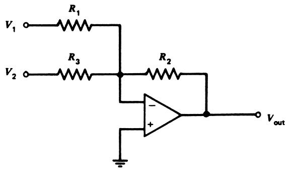
Design Example: Affine Function with Op Amps
Goal: Implement \[ V_{\text{out}} = 3.4V_{\text{in}} + 5 \]
Strategy:
- Use a summing amplifier that adds:
- A scaled version of \(V_{\text{in}}\) with gain 3.4.
- A fixed \(5\ \text{V}\) reference with gain 1.0.
- But summing amplifier inverts, so we cascade a gain \(-1\) inverter.
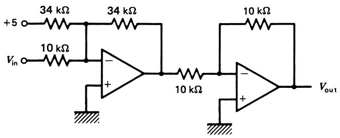
Resistor choices are made in kΩ so currents are in mA or less.
Noninverting Amplifier: High Input Impedance Gain Block
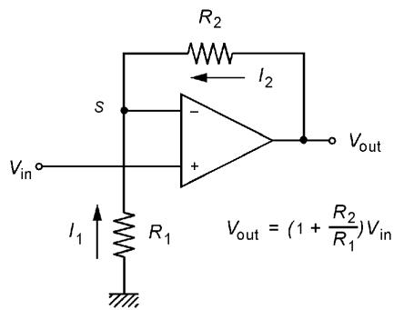
- Input applied directly to
+terminal (\(V_{+} = V_{\text{in}}\)). - Feedback network from output to
−terminal.
At node \(S\) (summing node): \(V_S = V_{-} = V_{+} = V_{\text{in}}\).
Currents:
\[ I_1 = \frac{V_{\text{in}}}{R_1}, \quad I_2 = \frac{V_{\text{in}} - V_{\text{out}}}{R_2} \]
Node equation \(I_1 + I_2 = 0\):
\[ \frac{V_{\text{in}}}{R_1} + \frac{V_{\text{in}} - V_{\text{out}}}{R_2} = 0 \]
Solve:
\[ V_{\text{out}} = \left(1 + \frac{R_2}{R_1}\right)V_{\text{in}} \]
- Gain \(\ge 1\) always.
- Input impedance is essentially the op amp’s input impedance (very high).
Example: High‑Impedance Gain Stage
Design a high‑impedance amplifier with gain 42.
We use the noninverting amplifier:
\[ 42 = 1 + \frac{R_2}{R_1} \]
So
\[ \frac{R_2}{R_1} = 41 \Rightarrow R_2 = 41R_1 \]
Pick \(R_1 = 1\text{k}\Omega\) ⇒ \(R_2 = 41\text{k}\Omega\).
Result:
- Input impedance: very high (op amp input).
- Gain \(\approx 42\).
Differential Amplifier Concept
We often care about difference of two voltages, not their absolute values:
\[ V_{\text{out}} = A(V_a - V_b) \]
- Ideal differential amplifier responds only to \(V_a - V_b\), not to their common level.
- Useful example: Wheatstone bridge offset voltage \(\Delta V = V_a - V_b\).
Define common‑mode voltage:
\[ V_{cm} = \frac{V_a + V_b}{2} \]
- Ideal differential amplifier has zero gain to \(V_{cm}\), nonzero gain to \(V_a - V_b\).
Common‑Mode Rejection
Real differential amplifiers have:
- Differential gain \(A\).
- Common‑mode gain \(A_{cm}\).
Define:
\[ \text{CMRR} = \frac{A}{A_{cm}}, \quad \text{CMR} = 20\log_{10}(\text{CMRR})\ \text{dB} \]
- Larger CMRR ⇒ better rejection of noise or interference that appears on both inputs.
- Typical CMR values: \(60\)–\(100\ \text{dB}\).
Instrumentation use case: bridge outputs a few mV difference sitting on several volts of common‑mode bias. A good differential/instrumentation amplifier extracts the tiny difference accurately.
Basic Differential Amplifier Circuit
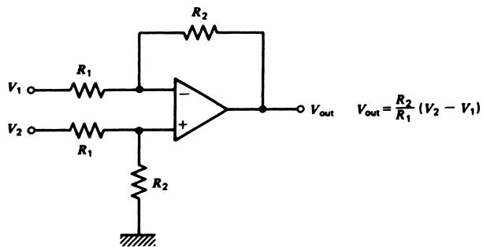
Using carefully matched resistors (\(R_1\) pair, \(R_2\) pair):
\[ V_{\text{out}} = \frac{R_2}{R_1}(V_2 - V_1) \]
- Same gain for both inputs (but one inverted).
- CMR performance is very sensitive to resistor matching.
Limitations:
- Input impedance is only on the order of \(R_1\) for each input.
- Not well suited to very high‑impedance sensors.
Instrumentation Amplifier (3‑Op‑Amp Version)
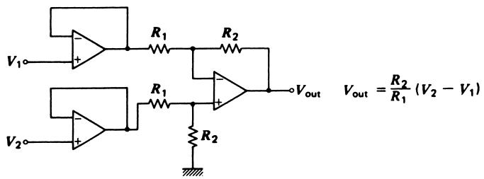
- Add voltage followers (or gain‑blocks) in front of the differential stage.
- Pros:
- Very high input impedance.
- Low output impedance.
- Transfer function stays: \[ V_{\text{out}} = \frac{R_2}{R_1}(V_2 - V_1) \]
- Gain adjustment may require changing two resistors in the differential stage.
Many ICs integrate all three op amps plus trimmed resistors into a single instrumentation‑amplifier package.
Popular 3‑Op‑Amp Instrumentation Amplifier Topology
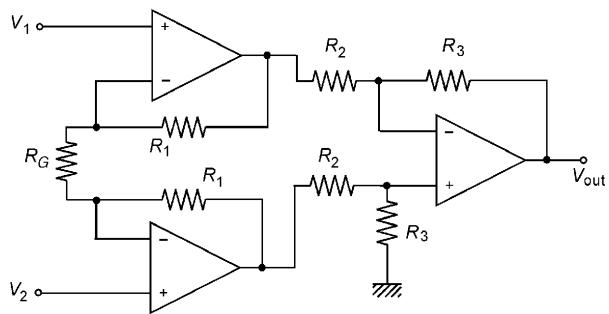
Transfer function:
\[ V_{\text{out}} = \left(1 + \frac{2R_1}{R_G}\right)\left(\frac{R_3}{R_2}\right)(V_2 - V_1) \]
- Single resistor \(R_G\) sets front‑end gain.
- Differential stage uses fixed \(R_2, R_3\) that can be laser‑trimmed for excellent CMRR.
Design workflow:
- Choose or given \(R_1\), \(R_2\), \(R_3\).
- Compute required differential gain \(A_d\).
- Solve for \(R_G\) using the formula above.
Example: Bridge + Instrumentation Amplifier (Example 21)
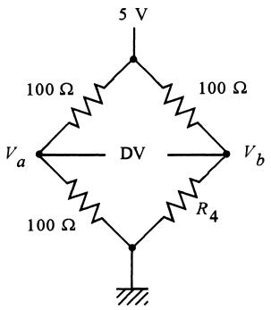
Given:
- Bridge powered by \(5\ \text{V}\).
- \(R_4\) varies from \(100\Omega\) to \(102\Omega\).
- Want instrumentation amp output \(0\) to \(2.5\ \text{V}\).
- Use topology of Figure 37 with \(R_2=R_3=1\text{k}\Omega\), \(R_1=100\text{k}\Omega\).
- Compute bridge offset at \(R_4=102\Omega\):
\[ \Delta V = V_a - V_b = 5\left[\frac{100}{100+100} - \frac{102}{100+102}\right] \]
\[ \Delta V \approx -24.75\ \text{mV} \]
Magnitude \(|\Delta V|=24.75\ \text{mV}\).
- Need gain \(A_d\) such that \(2.5\ \text{V}/24.75\ \text{mV} \approx 101\).
Using \[ 101 = \left(1 + \frac{2R_1}{R_G}\right)\left(\frac{R_3}{R_2}\right) \]
with \(R_3=R_2\) ⇒ \[ 101 = 1 + \frac{2(100{,}000)}{R_G} \]
Solve: \(R_G = 2000\ \Omega\).
Connect \(V_a\) to \(V_1\) and \(V_b\) to \(V_2\) to get positive output when \(R_4\) increases.
Voltage‑to‑Current Converter
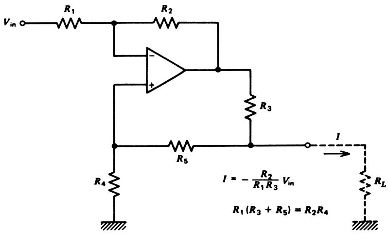
We want current \(I\) through a load to be a function of an input voltage \(V_{\text{in}}\), roughly independent of the load.
Under certain resistor constraints:
Condition: \[ R_1(R_3 + R_5) = R_2 R_4 \]
Resulting transfer: \[ I = -\frac{R_2}{R_1 R_3}V_{\text{in}} \]
Current direction can be positive or negative depending on wiring.
Max load resistance before saturation:
\[ R_{ml} = \frac{(R_4 + R_5)\left[\frac{V_{\text{sat}}}{I_m} - R_3\right]}{R_3 + R_4 + R_5} \]
Note \(R_{ml} < V_{\text{sat}}/I_m\).
Example: 0–1 V to 0–10 mA (Example 22)
Goal: 0–1 V input → 0–10 mA output, op amp saturates at ±10 V.
V–I converter inverts (\(I\propto -V_{\text{in}}\)), so use a first‑stage inverting amplifier to produce \(0\) to \(-1\ \text{V}\) from the original \(0\) to \(1\ \text{V}\).
In V–I stage of Figure 39, choose \(R_1=R_2\) ⇒ \[ I = \frac{V_{\text{in}}}{R_3} \]
For \(I_{\max}=10\ \text{mA}\) at \(|V_{\text{in}}|=1\ \text{V}\): \[ R_3 = \frac{1\ \text{V}}{10\ \text{mA}} = 100\ \Omega \]
Let \(R_5=0\) ⇒ from \(R_1(R_3 + R_5) = R_2 R_4\) and \(R_1=R_2\): \[ R_4 = R_3 = 100\ \Omega \]
Maximum load \(R_{ml}\) from Equation (44):
\[ R_{ml} = 100\left[\frac{10\ \text{V}}{10\ \text{mA}} - 100\right]/200 = 450\ \Omega \]
So the system can drive 0–10 mA through up to ~450 Ω before saturating.
Current‑to‑Voltage Converter
Simple configuration:
- Unknown current \(I\) is injected into inverting node through resistor \(R\).
- Noninverting input is at ground (or reference).
Using ideal rules:
- Node voltage ≈ 0 V (virtual ground).
- Current through \(R\) equals input current \(I\).
- Output adjusts so that \(I R + V_{\text{out}}/0 = 0\) ⇒ \[ V_{\text{out}} = -IR \]
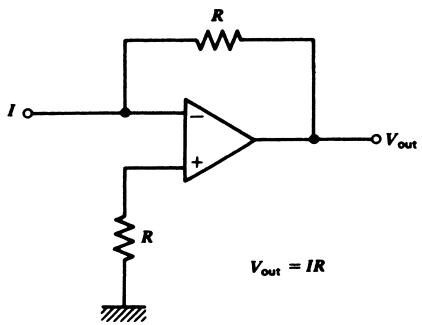
Used heavily for receiving 4–20 mA process‑control signals: choose \(R\) so that 4–20 mA maps to the desired voltage (e.g., 1–5 V).
Integrator
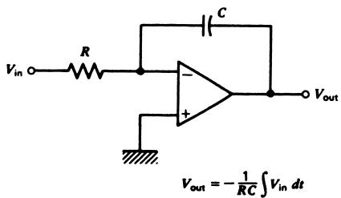
- Input resistor \(R\), feedback capacitor \(C\).
Node equation:
\[ \frac{V_{\text{in}}}{R} + C\frac{dV_{\text{out}}}{dt} = 0 \]
Integrate both sides:
\[ V_{\text{out}}(t) = -\frac{1}{RC}\int V_{\text{in}}(t)\,dt \]
Special case: constant input \(V_{\text{in}} = K\):
\[ V_{\text{out}}(t) = -\frac{K}{RC}t \]
⇒ linear ramp with slope \(-\frac{K}{RC}\).
Practical note:
- Output will eventually hit saturation; need reset mechanism (e.g., switch to discharge capacitor).
Example: Ramp 10 V/ms (Example 23)
Target: ramp rising at \(10\ \text{V/ms}\).
For the ideal integrator:
\[ V_{\text{out}}(t) = -\frac{V_{\text{in}}}{RC}t \]
We want slope magnitude \(\left|\frac{dV_{\text{out}}}{dt}\right| = 10\ \text{V/ms}\).
Pick \(RC = 1\ \text{ms}\) and \(V_{\text{in}} = -10\ \text{V}\) ⇒
\[ V_{\text{out}}(t) = +\frac{10}{1\ \text{ms}}t = 10\ \text{V/ms} \cdot t \]
One convenient choice: \(R = 1\text{k}\Omega\) and \(C = 1\ \mu\text{F}\)
since \(RC = 1\ \text{ms}\).
Differentiator
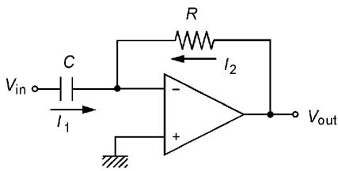
- Input capacitor \(C\), feedback resistor \(R\).
Node equation:
\[ C\frac{dV_{\text{in}}}{dt} + \frac{V_{\text{out}}}{R} = 0 \]
Solve for \(V_{\text{out}}\):
\[ V_{\text{out}} = -RC\frac{dV_{\text{in}}}{dt} \]
- Ideal differentiator boosts high‑frequency noise strongly, often unstable or noisy.
- In real circuits, extra resistors/capacitors are added to band‑limit and stabilize the differentiator.
Nonlinear Feedback for Linearization
- Put a nonlinear device in the feedback path.
- Node equation: \[ \frac{V_{\text{in}}}{R} + I(V_{\text{out}}) = 0 \]
Given known \(I(V_{\text{out}})\), we can solve (in principle):
\[ V_{\text{out}} = G\left(\frac{V_{\text{in}}}{R}\right) \]
where \(G(\cdot)\) is a nonlinear function (often the inverse of \(I(\cdot)\)).
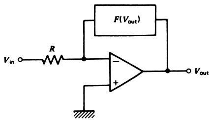
Example: Diode feedback for log amplifier
Diode current: \[ I(V_{\text{out}}) = I_0 e^{\alpha V_{\text{out}}} \]
Solve for \(V_{\text{out}}\): \[ V_{\text{out}} = \frac{1}{\alpha}\ln\left(\frac{V_{\text{in}}}{RI_0}\right) \]
Thus the circuit approximates a logarithmic amplifier.
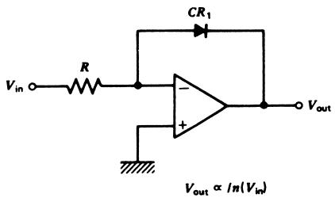
Design Guidelines for Signal Conditioning
We now take a systems view: given a sensor and required output, how do we design the op amp stages?
1. Define the Measurement Objective
- Parameter: temperature, pressure, strain, etc.
- Range: e.g., \(100^\circ\)C–\(200^\circ\)C, 45–85 psi, 2–4 V.
- Accuracy: e.g., ±5% FS, ±2 °C.
- Linearity: must the overall transfer be linear? If not, acceptable error?
- Noise: level and spectrum in the environment.
2. Understand/Select the Sensor
- Output type: R, V, I, frequency?
- Transfer function: graph, equation, sensitivity, linear vs nonlinear.
- Time response: time constant τ, resonance, bandwidth.
- Range: map of sensor output over measurement range.
- Power limits: maximum allowable dissipation or bias.
Design Guidelines (cont’d)
3. Design the Analog Signal Conditioning
- Desired output parameter: usually voltage; sometimes 4–20 mA or frequency.
- Output range: e.g., 0–5 V, −5–+5 V, 4–20 mA.
- Input impedance requirement:
- To avoid loading the sensor, especially if it’s a high‑impedance source.
- Output impedance requirement:
- Must drive next stage without significant loading.
- Operations needed:
- Gain / attenuation
- Offset (bias)
- Filter (low‑pass / anti‑alias)
- Conversion (V–I, I–V)
- Linearization or function shaping
Design Guidelines (cont’d)
4. General Notes
- For resistive sensors in bridges/dividers, consider:
- Nonlinearity of bridge output vs resistance.
- Self‑heating due to current/power.
- Start from a static transfer equation: \[ V_{\text{out}} = mV_{\text{in}} + V_0 \] or similar; then choose op amp blocks to implement it.
- Always check for loading:
- Does your op amp input significantly change the sensor output?
- Does your output stage properly drive its load?
Example 24: Voltage‑to‑Voltage Conditioning
Given:
- Sensor output \(V_{\text{in}}\): −2.4 to −1.1 V.
- Need \(V_{\text{out}}\): 0 to 2.5 V.
- Sensor impedance unknown ⇒ design for high input impedance.
Assume linear mapping: \[ V_{\text{out}} = m V_{\text{in}} + V_0 \]
Use end points:
- At \(V_{\text{in}}=-2.4\): \(0 = m(-2.4) + V_0\)
- At \(V_{\text{in}}=-1.1\): \(2.5 = m(-1.1) + V_0\)
From the first: \(V_0 = 2.4m\). Substitute into second:
\[ 2.5 = -1.1m + 2.4m = 1.3m \]
So \(m = 2.5/1.3 \approx 1.923\), \(V_0 = 2.4m \approx 4.615\).
Final equation:
\[ V_{\text{out}} = 1.923 V_{\text{in}} + 4.615 \]
Implementation idea:
- Buffer the input with a voltage follower (high input impedance).
- Use a summing amplifier to add scaled \(V_{\text{in}}\) and a bias from a voltage divider.
- Cascade a gain −1 stage if necessary to correct sign, depending on chosen topology.
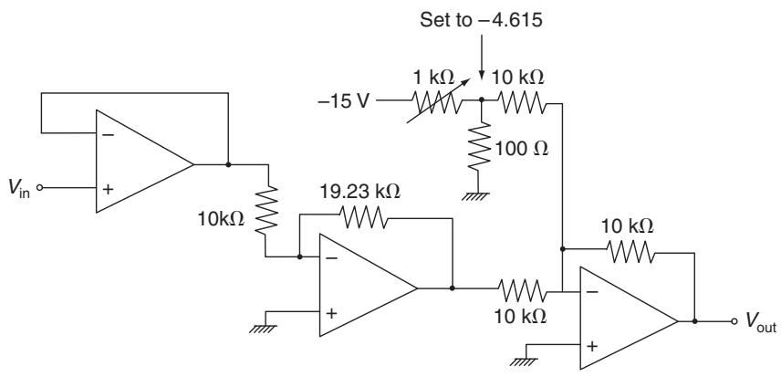
Trimmer pot in the bias divider allows fine adjustment to exactly 4.615 V.
Example 25: Full Design with Power Constraint
Problem summary:
- Measure temperature 250–450 °C with ±2 °C accuracy.
- Sensor: resistance \(R_s\) linearly from 280 Ω (250 °C) to 1060 Ω (450 °C).
- Max power in sensor: 5 mW.
- Desired output: −5 to +5 V, linear with temperature.
- Load: high‑impedance recorder.
Limit sensor current using \(P = I^2R\):
At \(R=1060\ \Omega\):
\[ I_{\max} = \sqrt{\frac{0.005}{1060}} \approx 2.17\ \text{mA} \]
So keep \(I_s < 2\ \text{mA}\) for all Rs.
Linear relationship from \(R_s\) to \(V_{\text{out}}\):
Assume: \[ V_{\text{out}} = mR_s + V_0 \]
Using endpoints:
- At \(R_s = 280\ \Omega\) ⇒ \(V_{\text{out}}=-5\): \(-5 = 280m + V_0\)
- At \(R_s = 1060\ \Omega\) ⇒ \(V_{\text{out}}=+5\): \(5 = 1060m + V_0\)
Subtract:
\[ 10 = 780m \Rightarrow m = 0.0128 \]
Then, from first equation:
\[ -5 = 280(0.0128) + V_0 \Rightarrow V_0 = -8.58 \]
So:
\[ V_{\text{out}} = 0.0128R_s - 8.58 \]
Implementation idea:
- Use an inverting amplifier with \(R_s\) in feedback, plus a fixed input voltage to generate a term proportional to \(R_s\).
- Follow with a summing inverter to add the constant bias −8.58 V and correct the sign.
- Set the fixed input resistor and voltage so sensor current stays ≤ 1 mA (safely under 2 mA).
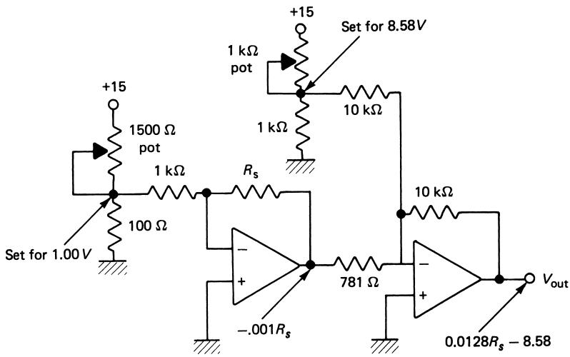
- The 1 V / 1 kΩ source guarantees 1 mA through Rs.
- Trimmers allow precise adjustment of the 1.00 V and 8.58 V reference levels.
Summary / Key Points
- Op amp basics: treat the op amp as a high‑gain differential amplifier; with feedback, we can assume \(V_{+}=V_{-}\) and no input current for ideal analysis.
- Core configurations:
- Voltage follower: unity gain, very high input Z, low output Z.
- Inverting amplifier: gain \(-R_2/R_1\), input Z ≈ \(R_1\).
- Noninverting amplifier: gain \(1+R_2/R_1\), very high input Z.
- Summing amplifier: weighted sum of inputs.
- Differential and instrumentation amplifiers:
- Extract small differences (\(V_a - V_b\)) in presence of large common‑mode voltage.
- CMR/CMRR key metrics; resistor matching critical.
- 3‑op‑amp instrumentation amps provide high Z, adjustable gain via \(R_G\).
- Process control interfaces:
- Voltage–current converter to generate 4–20 mA‑type signals.
- Current–voltage converter to receive them.
- Signal‑processing blocks:
- Integrator: \(V_{\text{out}} = -\frac{1}{RC}\int V_{\text{in}}dt\).
- Differentiator: \(V_{\text{out}} = -RC\frac{dV_{\text{in}}}{dt}\) (requires stabilization).
- Nonlinear feedback enables logarithmic or custom transfer functions.
- Design methodology:
- Start from the desired algebraic relation between sensor and output.
- Check sensor loading, power, and accuracy.
- Implement using appropriate op amp stages and realistic component values (mA, kΩ).
Formula Summary
Ideal Op Amp Golden Rules (with negative feedback):
- \(I_{+} = I_{-} = 0\)
- \(V_{+} = V_{-}\)
Inverting Amplifier:
\[ V_{\text{out}} = -\frac{R_2}{R_1}V_{\text{in}}, \quad Z_{\text{in}} \approx R_1 \]
Noninverting Amplifier:
\[ V_{\text{out}} = \left(1 + \frac{R_2}{R_1}\right)V_{\text{in}} \]
Summing Amplifier (2‑input):
\[ V_{\text{out}} = -\left(\frac{R_2}{R_1}V_1 + \frac{R_2}{R_3}V_2\right) \]
Differential Amplifier:
\[ V_{\text{out}} = \frac{R_2}{R_1}(V_2 - V_1) \]
CMRR & CMR:
\[ \text{CMRR} = \frac{A}{A_{cm}}, \quad \text{CMR} = 20\log_{10}(\text{CMRR}) \]
Instrumentation Amplifier (Figure 37):
\[ V_{\text{out}} = \left(1 + \frac{2R_1}{R_G}\right)\left(\frac{R_3}{R_2}\right)(V_2 - V_1) \]
V–I Converter (Figure 39):
Constraint: \(R_1(R_3 + R_5) = R_2R_4\)
Then:
\[ I = -\frac{R_2}{R_1R_3}V_{\text{in}} \]
Max load:
\[ R_{ml} = \frac{(R_4 + R_5)\left(\frac{V_{\text{sat}}}{I_m} - R_3\right)}{R_3 + R_4 + R_5} \]
I–V Converter (Figure 40):
\[ V_{\text{out}} = -IR \]
Integrator:
\[ V_{\text{out}} = -\frac{1}{RC}\int V_{\text{in}}dt \]
Differentiator:
\[ V_{\text{out}} = -RC\frac{dV_{\text{in}}}{dt} \]
Logarithmic Amplifier (diode feedback):
If \(I = I_0 e^{\alpha V_{\text{out}}}\) and \(I = V_{\text{in}}/R\):
\[ V_{\text{out}} = \frac{1}{\alpha}\ln\left(\frac{V_{\text{in}}}{RI_0}\right) \]
Checkpoint / Practice Prompts
Consider trying these on your own:
- Design an inverting amplifier with gain −10 and input impedance ≥ 20 kΩ. Specify \(R_1, R_2\).
- For a 4–20 mA current loop, choose \(R\) in a current‑to‑voltage converter so that the output spans 1–5 V.
- You have a strain‑gauge bridge producing −10 to +10 mV. Design a front‑end instrumentation amplifier to produce −5 to +5 V. Estimate required gain and discuss CMRR needs.
Operational Amplifiers in Instrumentation - Interactive
1. Ideal Inverting Amplifier – Gain Exploration
The ideal inverting op amp has transfer function
\[ V_{\text{out}} = -\frac{R_2}{R_1}V_{\text{in}} \]
Use this sandbox to see how changing \(R_1\), \(R_2\), or \(V_{\text{in}}\) alters the output.
Try:
- Make \(R_2 < R_1\). What happens to \(|V_{\text{out}}|\) relative to \(|V_{\text{in}}|\)?
- Make \(R_2 \gg R_1\). How large can \(V_{\text{out}}\) get before it would hit typical \(V_{\text{sat}}\) (e.g., ±10 V)?
2. Practical Design Rule: “Think mA and kΩ”
We rarely want currents above tens of mA in op amp circuits. This cell computes the feedback current in an inverting amplifier and warns if it is too high.
Try:
- First, use \(R_1 = 1\ \Omega\), \(R_2 = 4.5\ \Omega\) (unrealistic).
- Then, use \(R_1 = 1\text{k}\Omega\), \(R_2 = 4.5\text{k}\Omega\) and compare the currents.
3. Reactive Visualization: Inverting Amplifier Gain vs Resistors
Use sliders to choose \(R_1\) and \(R_2\). The plot shows:
- Gain magnitude \(|R_2 / R_1|\) vs \(R_2\) for a fixed \(R_1\).
- A marker at your selected \((R_2, |R_2/R_1|)\).
Questions:
- For \(R_1\) fixed, how does increasing \(R_2\) change the gain?
- What region of gains looks practical given typical \(V_{\text{sat}}\) and \(V_{\text{in}}\)?
4. Instrumentation Amplifier Gain – Single-Resistor Control
For the 3‑op‑amp instrumentation amplifier (Figure 37), the gain is
\[ V_{\text{out}} = \left(1 + \frac{2R_1}{R_G}\right)\left(\frac{R_3}{R_2}\right)(V_2 - V_1) \]
Assume \(R_2 = R_3\) so their ratio is 1. Then
\[ A_d = 1 + \frac{2R_1}{R_G} \]
Explore how changing \(R_G\) affects the gain.
Try to reproduce the Example 21 result:
- Use \(R_1 = 100\text{k}\Omega\) and search for \(R_G\) that gives \(A_d \approx 101\).
5. Reactive Visualization: Instrumentation Amplifier Gain vs RG
Drag the slider to change \(R_G\) and see how the differential gain \(A_d\) responds.
Question:
- Why is it convenient in practice that we can control \(A_d\) by adjusting only \(R_G\), while \(R_2\) and \(R_3\) remain precisely matched?
6. Bridge + Instrumentation Amplifier – End-to-End Simulation
Consider the bridge of Example 21, with \(R_4\) varying from 100 to 102 Ω, and supply 5 V. An instrumentation amplifier with gain \(A_d \approx 101\) converts the small \(\Delta V\) into a 0–2.5 V signal.
This interactive cell lets you vary \(R_4\) and \(R_G\) and see the resulting \(V_{\text{out}}\).
Try:
- Set \(R_4=100\ \Omega\) (bridge balanced). What is \(V_{\text{out}}\)?
- Set \(R_4=102\ \Omega\) and tune \(R_G\) so that \(V_{\text{out}} \approx 2.5\ \text{V}\).
7. Integrator: Visualizing Ramp Generation
The integrator output is
\[ V_{\text{out}}(t) = -\frac{1}{RC}\int V_{\text{in}}(t)\,dt \]
For constant \(V_{\text{in}} = K\),
\[ V_{\text{out}}(t) = -\frac{K}{RC}t \]
Interactively explore how \(R\), \(C\), and \(K\) affect the slope of the ramp.
Questions:
- For a desired ramp rate of 10 V/ms, what \(RC\) and \(V_{\text{in}}\) can you use?
- How does doubling \(R\) affect the slope?
8. Voltage-to-Current Converter: Checking Load Limits
For the converter in Figure 39, under design constraints
\[ I = -\frac{R_2}{R_1 R_3}V_{\text{in}} \]
and the maximum load resistance before hitting saturation is
\[ R_{ml} = \frac{(R_4 + R_5)\left(\frac{V_{\text{sat}}}{I_m} - R_3\right)}{R_3 + R_4 + R_5} \]
Use this interactive block to experiment with component values and see \(I_m\) and \(R_{ml}\).
viewof R1_v2i = Inputs.range([1e3, 100e3], {step: 1e3, label: "R1 (Ω)"})
viewof R2_v2i = Inputs.range([1e3, 100e3], {step: 1e3, label: "R2 (Ω)"})
viewof R3_v2i = Inputs.range([10, 1e3], {step: 10, label: "R3 (Ω)"})
viewof R4_v2i = Inputs.range([10, 1e3], {step: 10, label: "R4 (Ω)"})
viewof R5_v2i = Inputs.range([0, 1e3], {step: 10, label: "R5 (Ω)"})
viewof Vin_max = Inputs.range([0.1, 5.0], {step: 0.1, label: "Max |Vin| (V)"})
viewof Vsat_v2i = Inputs.range([5.0, 15.0], {step: 0.5, label: "Op amp Vsat (V)"})Try to reproduce Example 22:
- Set \(R_1=R_2\), \(R_3=R_4=100\ \Omega\), \(R_5=0\), \(V_{\text{in,max}}=1\ \text{V}\), \(V_{\text{sat}}=10\ \text{V}\).
- Compare your \(I_{\max}\) and \(R_{ml}\) to the textbook values (10 mA and 450 Ω).
9. Challenge: Build Your Own Signal Conditioning Equation
Many of the textbook examples start by writing
\[ V_{\text{out}} = mV_{\text{in}} + V_0 \]
then realizing this using a combination of op amp blocks.
This cell lets you experiment with choices of \(m\) and \(V_0\) and see how \(V_{\text{out}}\) maps a given input range.
Design exercise:
- Pick an input range (e.g., −2.4 to −1.1 V) and desired output range (e.g., 0 to 2.5 V).
- Use this tool to find \(m\) and \(V_0\).
- Sketch an op amp circuit (follower + inverting/noninverting + summing) that implements your mapping.